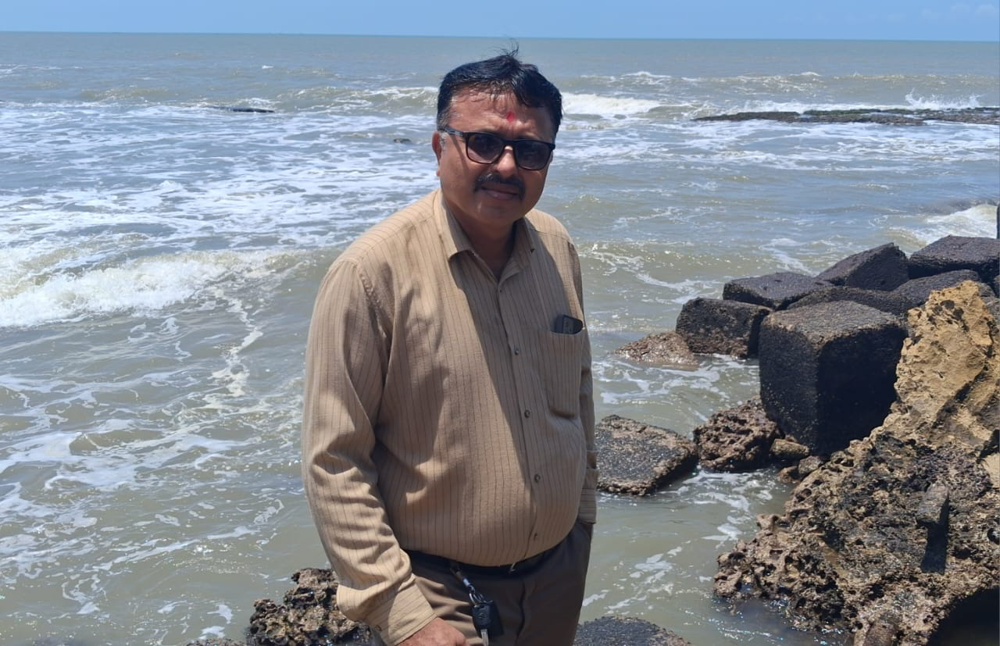

B. K. Unagar
Master Realist Painter · Freelance Fine Artist & Portraitist
Archival Oil on Canvas · Master Charcoal & Graphite Studies · Custom Heirloom Commissions

📍 Location: Gujarat, India (Worldwide Client Services)
📞 Phone: +91 92655 17759
💬 WhatsApp: +91 92655 17759
✉️ Email: digitalguruji2021@gmail.com
🌐 Portfolio: obsidian-art-gallary.github.io
Freelance Profile & Professional Statement
Seasoned freelance fine artist and master draftsman with over two decades of professional studio experience serving international art collectors, interior designers, and private clients on platforms like Upwork, Freelancer, and direct studio commissions. Specializing in bespoke heirloom oil portraits on stretched canvas and expressive charcoal anatomy drawings hand-painted from client photographs. Every piece is executed with traditional multi-pass glazes using lightfast archival pigments—guaranteeing authentic human emotion, depth, and permanence that no digital print or mechanical filter can ever match.
"A painted portrait does not merely duplicate a reference photograph—it breathes life, character, and quiet soul into a room. Your walls deserve authentic human devotion, not mechanical reproduction."
Core Freelance Services & Mediums
Bespoke Heirloom Oil Portraits
Hand-painted family, ancestor, executive, and child portraits on heavy-weave stretched linen with multi-layer glazes and 100+ year UV protection.
Master Charcoal & Graphite Drawings
High-contrast tonal gradation, delicate hatching, facial musculature, and lifelike human expressions on museum-grade acid-free paper.
Sacred & Devotional Heritage Art
Custom spiritual compositions, Radha-Krishna iconography, and revered masters capturing divine tranquility and contemplation.
Still Life, Flora & Fine Landscapes
Complex reflective glass textures, vibrant botanical arrangements, and atmospheric pastoral scenes tailored for luxury interiors.
Selected Oil Paintings on Canvas (Portfolio Catalog)
- Celestial Radha Krishna • Devotional Realism & Ambient Glow
- Citrus Harmony • 1048 × 740 px Still Life in Natural Light
- Crimson Lilies in Crystal • Botanical Contrast & Water Refraction
- Lilac & Roses in Ornate Pitcher • Classical Academic Floral Realism
- Riverside Twilight • Atmospheric Landscape with Rural Boatman
- Golden Sundae Study • Luminous Glass Reflections & Textures